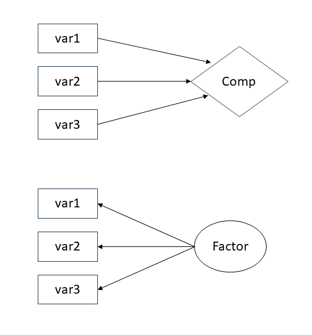
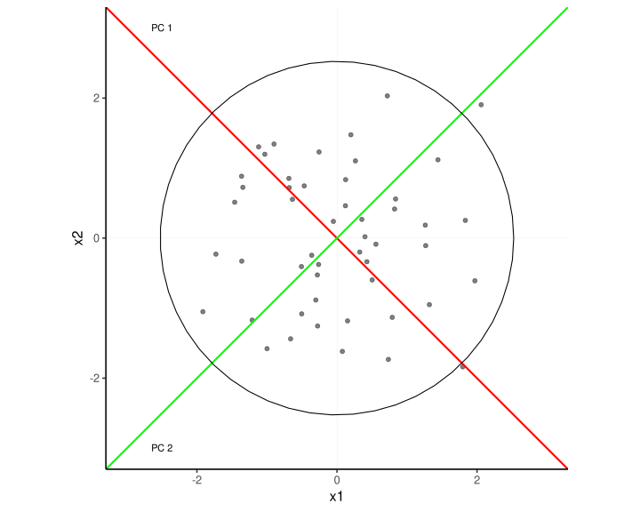
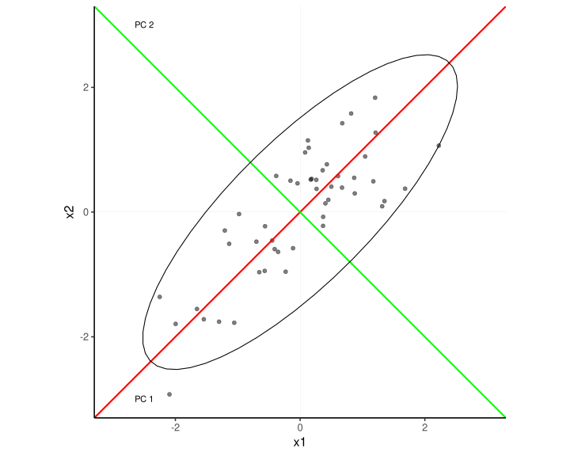

Principal Component Analysis
Data Analysis for Psychology in R 3
John Martindale
Psychology, PPLS
University of Edinburgh
Course Overview
|
multilevel modelling working with group structured data |
regression refresher |
| introducing multilevel models | |
| more complex groupings | |
| centering, assumptions, and diagnostics | |
| recap | |
|
factor analysis working with multi-item measures |
what is a psychometric test? |
| using composite scores to simplify data (PCA) | |
| uncovering underlying constructs (EFA) | |
| more EFA | |
| recap |
This week
- Introduction to data reduction
- Purpose of PCA
- Eigenvalues & Variance
- Eigenvectors, loadings & Interpreting PCA
- PCA scores
Introduction to data reduction
What’s data/dimension reduction?
- Mathematical and statistical procedures
- Reduce large set of variables to a smaller set
- Several forms of data reduction
- (Typically) Reduce sets of variables measured across
- Principal components analysis
- Factor analysis
- Correspondence analysis (nominal categories)
- (Typically) reduce sets of observations (individuals) into smaller groups
- K-means clustering
- Latent class analysis
- (Typically) to position observations along an unmeasured dimensions
- Multidimensional scaling
Uses of dimension reduction techniques
- Theory testing
- What are the number and nature of dimensions that best describe a theoretical construct?
- e.g. debates in intelligence and personality
- Test construction
- How should I group my items into sub-scales?
- Which items are the best measures of my constructs?
- e.g. anywhere where we construct a test (differential, social, developmental)
- Pragmatic
- I have multicollinearity issues/too many variables, how can I defensibly combine my variables?
- e.g. Genetics (GWAS), big data, predictive modelling
Questions to ask before you start
- Why are your variables correlated?
- Agnostic/don’t care
- Believe there are underlying “causes” of these correlations
- What are your goals?
- Just reduce the number of variables
- Reduce your variables and learn about/model their underlying (latent) causes
Questions to ask before you start
- Why are your variables correlated?
- Agnostic/don’t care
- Believe there are underlying “causes” of these correlations
- What are your goals?
- Just reduce the number of variables
- Reduce your variables and learn about/model their underlying (latent) causes
Purpose of PCA
Principal components analysis
- Goal is explaining as much of the total variance in a data set as possible
- Starts with original data
- Calculates covariances (correlations) between variables
- Applies procedure called eigendecomposition to calculate a set of linear composites of the original variables
An example
In our path analysis example, we included two health covariates.
Suppose instead we measured many more health variables, and we wanted to create a composite score where higher scores represent better health.
We measure:
- Average hours of sleep per night (2 week average)
- Average minutes of exercise per day (2 week average)
- Average calorific intake per day (2 week average)
- Steps per day outside of exercise (2 week average)
- Count of physical health conditions (high blood pressure, diabetes, cardiovascular disease etc. max score 10)
- BMI
We collect this data on 750 participants.
PCA
- Starts with a correlation matrix
sleep exercise calories steps conditions BMI
sleep 1.00 0.65 0.49 0.40 0.23 0.14
exercise 0.65 1.00 0.63 0.47 0.29 0.23
calories 0.49 0.63 1.00 0.33 0.17 0.17
steps 0.40 0.47 0.33 1.00 0.21 0.15
conditions 0.23 0.29 0.17 0.21 1.00 0.11
BMI 0.14 0.23 0.17 0.15 0.11 1.00- And turns this into an output which represents the degree to which each item contributes to a composite
Principal Components Analysis
Call: principal(r = health, nfactors = 1, rotate = "none")
Standardized loadings (pattern matrix) based upon correlation matrix
PC1 h2 u2 com
sleep 0.79 0.63 0.37 1
exercise 0.88 0.77 0.23 1
calories 0.76 0.57 0.43 1
steps 0.66 0.43 0.57 1
conditions 0.43 0.19 0.81 1
BMI 0.35 0.12 0.88 1
PC1
SS loadings 2.71
Proportion Var 0.45
Mean item complexity = 1
Test of the hypothesis that 1 component is sufficient.
The root mean square of the residuals (RMSR) is 0.1
with the empirical chi square 238 with prob < 2.9e-46
Fit based upon off diagonal values = 0.92What PCA does do?
Repackages the variance from the correlation matrix into a set of components
Components = orthogonal (i.e.,uncorrelated) linear combinations of the original variables
- 1st component is the linear combination that accounts for the most possible variance
- 2nd accounts for second-largest after the variance accounted for by the first is removed
- 3rd…etc…
Each component accounts for as much remaining variance as possible
What PCA does do?
If variables are very closely related (large correlations), then we can represent them by fewer composites.
If variables are not very closely related (small correlations), then we will need more composites to adequately represent them.
In the extreme, if variables are entirely uncorrelated, we will need as many components as there were variables in original correlation matrix.
Thinking about dimensions


Eigendecomposition
Components are formed using an eigen-decomposition of the correlation matrix
Eigen-decomposition is a transformation of the correlation matrix to re-express it in terms of eigenvalues: and eigenvectors
Eigenvalues are a measure of the size of the variance packaged into a component
- Larger eigenvalues mean that the component accounts for a large proportion of the variance.
- Visually (previous slide) eigenvalues are the length of the line
Eigenvectors provide information on the relationship of each variable to each component.
- Visually, eigenvectors provide the direction of the line.
There is one eigenvector and one eigenvalue for each component
Eigenvalues and eigenvectors
[1] "e1" "e2" "e3" "e4" "e5" component1 component2 component3 component4 component5
item1 "w11" "w12" "w13" "w14" "w15"
item2 "w21" "w22" "w23" "w24" "w25"
item3 "w31" "w32" "w33" "w34" "w35"
item4 "w41" "w42" "w43" "w44" "w45"
item5 "w51" "w52" "w53" "w54" "w55" - Eigenvectors are sets of weights (one weight per variable in original correlation matrix)
- e.g., if we had 5 variables each eigenvector would contain 5 weights
- Larger weights mean a variable makes a bigger contribution to the component
Eigenvalues & Variance
Eigen-decomposition of health items
- We can use the eigen() function to conduct an eigen-decomposition for our health items
Eigen-decomposition of health items
- Eigenvalues:
[1] 2.714 0.934 0.880 0.689 0.491 0.292- Eigenvectors
[,1] [,2] [,3] [,4] [,5] [,6]
[1,] -0.481 0.225 0.055 0.126 0.732 -0.404
[2,] -0.534 0.093 0.079 0.134 0.046 0.824
[3,] -0.459 0.173 0.246 0.386 -0.643 -0.367
[4,] -0.398 0.069 -0.042 -0.888 -0.186 -0.107
[5,] -0.264 -0.280 -0.901 0.167 -0.089 -0.075
[6,] -0.210 -0.910 0.342 0.000 0.076 -0.071Eigenvalues and variance
It is important to understand some basic rules about eigenvalues and variance.
The sum of the eigenvalues will equal the number of variables in the data set.
- The covariance of an item with itself is 1 (think the diagonal in a correlation matrix)
- Adding these up = total variance.
- A full eigendecomposition accounts for all variance distributed across eigenvalues.
- So the sum of the eigenvalues must = 6 for our example.
Eigenvalues and variance
- Given this, if we want to know the variance accounted for my a given component:
\[\frac{eigenvalue}{totalvariance}\]
or \[\frac{eigenvalue}{p}\], where \(p\) = number of items.
Eigenvalues and variance
- and if we sum this
How many components to keep?
The relation of eigenvalues to variance is useful to us in order to understand how many components we should retain in our analysis
Eigen-decomposition repackages the variance but does not reduce our dimensions
Dimension reduction comes from keeping only the largest components
- Assume the others can be dropped with little loss of information
Our decisions on how many components to keep can be guided by several methods
- Set a amount of variance you wish to account for
- Scree plot
- Minimum average partial test (MAP)
- Parallel analysis
Variance accounted for
As has been noted, each component accounts for some proportion of the variance in our original data.
The simplest method we can use to select a number of components is simply to state a minimum variance we wish to account for.
- We then select the number of components above this value.
Scree plot
Based on plotting the eigenvalues
- Remember our eigenvalues are representing variance.
Looking for a sudden change of slope
Assumed to potentially reflect point at which components become substantively unimportant
- As the slope flattens, each subsequent component is not explaining much additional variance.
Constructing a scree plot
- Eigenvalue plot
- x-axis is component number
- y-axis is eigenvalue for each component
- Keep the components with eigenvalues above a kink in the plot

Further scree plot examples

- Scree plots vary in how easy it is to interpret them
Further scree plot examples

Further scree plot examples

Minimum average partial test (MAP)
Extracts components iteratively from the correlation matrix
Computes the average squared partial correlation after each extraction
- This is the MAP value.
At first this quantity goes down with each component extracted but then it starts to increase again
MAP keeps the components from point at which the average squared partial correlation is at its smallest
MAP test for the aggression items
Parallel analysis
Simulates datasets with same number of participants and variables but no correlations
Computes an eigen-decomposition for the simulated datasets
Compares the average eigenvalue across the simulated datasets for each component
If a real eigenvalue exceeds the corresponding average eigenvalue from the simulated datasets it is retained
We can also use alternative methods to compare our real versus simulated eigenvalues
- e.g. 95% percentile of the simulated eigenvalue distributions
Parallel analysis for the aggression items
Limitations of scree, MAP, and parallel analysis
There is no one right answer about the number of components to retain
Scree plot, MAP and parallel analysis frequently disagree
Each method has weaknesses
- Scree plots are subjective and may have multiple or no obvious kinks
- Parallel analysis sometimes suggest too many components (over-extraction)
- MAP sometimes suggests too few components (under-extraction)
Examining the PCA solutions should also form part of the decision
- Do components make practical sense given purpose?
- Do components make substantive sense?
Eigenvectors, loadings & Interpreting PCA
Eigenvectors & PCA Loadings
Whereas we use eigenvalues to think about variance, we use eigenvectors to think about the nature of components.
To do so, we convert eigenvectors to PCA loadings.
- A PCA loading gives the strength of the relationship between the item and the component.
- Range from -1 to 1
- The higher the absolute value, the stronger the relationship.
The sum of the squared loadings for any variable on all components will equal 1.
- That is all the variance in the item is explained by the full decomposition.
Eigenvectors & PCA Loadings
We get the loadings by:
\(a_{ij}^* = a_{ij}\sqrt{\lambda_j}\)
- where
- \(a_{ij}^*\) = the component loading for item \(i\) on component \(j\)
- \(a_{ij}\) = the associated eigenvector value
- \(\lambda_j\) is the eigenvalue for component \(j\)
- where
Essentially we are scaling the eigenvectors by the eigenvalues such that the components with the largest eigenvalues have the largest loadings.
Looking again at the loadings
Principal Components Analysis
Call: principal(r = health, nfactors = 1, rotate = "none")
Standardized loadings (pattern matrix) based upon correlation matrix
PC1 h2 u2 com
sleep 0.79 0.63 0.37 1
exercise 0.88 0.77 0.23 1
calories 0.76 0.57 0.43 1
steps 0.66 0.43 0.57 1
conditions 0.43 0.19 0.81 1
BMI 0.35 0.12 0.88 1
PC1
SS loadings 2.71
Proportion Var 0.45
Mean item complexity = 1
Test of the hypothesis that 1 component is sufficient.
The root mean square of the residuals (RMSR) is 0.1
with the empirical chi square 238 with prob < 2.9e-46
Fit based upon off diagonal values = 0.92Running a PCA with fewer components
We can run a PCA keeping just a selected number of components
We do this using the
principal()function from then psych packageWe supply the dataframe or correlation matrix as the first argument
We specify the number of components to retain with the
nfactors=argumentIt can be useful to compare and contrast the solutions with different numbers of components
- Allows us to check which solutions make most sense based on substantive/practical considerations
Interpreting the components
Once we have decided how many components to keep (or to help us decide) we examine the PCA solution
We do this based on the component loadings
- Component loadings are calculated from the values in the eigenvectors
- They can be interpreted as the correlations between variables and components
The component loadings
Component loading matrix
- Average hours of sleep per night (2 week average)
- Average minutes of exercise per day (2 week average)
- Average calorific intake per day (2 week average)
- Steps per day outside of exercise (2 week average)
- Count of physical health conditions (high blood pressure, diabetes, cardiovascular disease etc. max score 10)
- BMI
How good is my PCA solution?
Part 5: PCA scores
Computing scores for the components
- After conducting a PCA you may want to create scores for the new dimensions
- e.g., to use in a regression
- Simplest method is to sum the scores for all items that are deemed to “belong” to a component.
- This idea is usually on the size of the component loadings
- A loading of >|.3| is typically used.
- Better method is to compute them taking into account the weights
- i.e. based on the eigenvalues and vectors
Computing component scores in R
Reporting a PCA
- Main principles: transparency and reproducibility
- Method
- Methods used to decide on number of factors
- Rotation method
- Results
- Scree test (& any other considerations in choice of number of components)
- How many components were retained
- The loading matrix for the chosen solution
- Variance explained by components
- Labelling and interpretation of the components